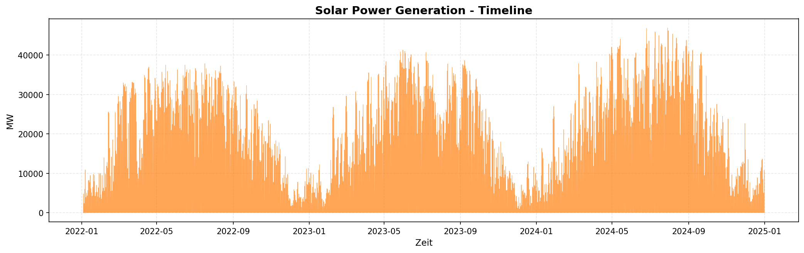
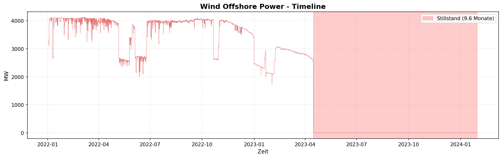

🎓 Advanced Time Series Forecasting für Energiemärkte
Ein kritischer Vergleich von ML, DL und statistischen Methoden
Präsentationsdauer: 20 Minuten
Zielgruppe: Advanced Time Series Analysis Kurs
Datum: Februar 2026
📋 Agenda (20 Min)
- Datenbasis & Preprocessing (4 Min) - Slides 1-3
- Modell-Performance nach Zeitreihen (10 Min) - Slides 4-8
- Kritische Diskussion & Lessons Learned (5 Min) - Slides 9-10
- Q&A (1 Min)
TEIL 1: DATENBASIS & PREPROCESSING
Slide 1: Datenbasis - Deutsche Energiemärkte 2022-2024
📊 Fünf Zeitreihen, stündliche Auflösung
| Zeitreihe |
Datenpunkte |
Zeitraum |
Quelle |
Einheit |
| Solar |
26.257 |
2022-2024 |
SMARD/ENTSO-E |
MW |
| Wind Offshore |
26.257 |
2022-2024 |
SMARD/ENTSO-E |
MW |
| Wind Onshore |
26.257 |
2022-2024 |
SMARD/ENTSO-E |
MW |
| Consumption |
26.257 |
2022-2024 |
SMARD/ENTSO-E |
MW |
| Price (Day-Ahead) |
26.257 |
2022-2024 |
EPEX Spot |
EUR/MWh |
📈 Zeitreihen-Übersicht

🎯 Herausforderungen
- Hohe Volatilität: CV von 0.31 (Solar) bis 0.85 (Price)
- Saisonalität: Multiple Patterns (täglich, wöchentlich, jährlich)
- Strukturbrüche: Wind Offshore Stillstand (Apr 2023 - Feb 2024, 9.8 Monate!)
- Negative Preise: 827 Fälle (3.15%) - Oversupply-Situationen
- Missing Data: Wind Onshore hatte Datenlücken
- Nicht-Stationarität: Alle Zeitreihen nicht-stationär (KPSS Test p<0.01)
Slide 2: Preprocessing Pipeline - Von Rohdaten zu 31 Features
🔧 Kritische Aufbereitungsschritte
1. Data Cleaning
# Missing Data Detection
missing_rate = df.isna().sum() / len(df)
# Interpolation für einzelne Gaps (<24h)
df_cleaned = df.interpolate(method='time', limit=24)
# Outlier Detection (3-Sigma-Regel + Domain-Wissen)
# Solar: Kann nie negativ sein
# Wind: Maximalkapazität checken
2. Feature Engineering (31 Features pro Zeitreihe)
Kategorien:
1. Lags (6 Features): lag_1, lag_2, lag_3, lag_24, lag_168, lag_720
2. Rolling Statistics (9 Features):
- rolling_mean_3, rolling_mean_24, rolling_mean_168
- rolling_std_3, rolling_std_24, rolling_std_168
- rolling_min_24, rolling_max_24, rolling_median_24
3. Differenzen (4 Features): diff_1, diff_24, diff_168, diff_720
4. Zeitliche Features (7 Features):
- hour, day_of_week, month, quarter
- is_weekend, is_holiday, day_of_year
5. Momentum (3 Features): momentum_3h, momentum_24h, momentum_168h
6. Volatilität (2 Features): volatility_24h, volatility_168h
Warum so viele?
- ML-Modelle (XGBoost, LightGBM) profitieren massiv von Features
- Feature Importance zeigt: Top 3 Features = 60-80% der Performance!
- LSTM nutzt nur Rohdaten, aber Feature-Augmentation hilft auch hier
3. Train/Val/Test Split
# Temporale Trennung (KEINE Random-Shuffle bei Zeitreihen!)
train: 2022-01-01 bis 2023-06-30 (60%)
val: 2023-07-01 bis 2023-12-31 (20%)
test: 2024-01-01 bis 2024-12-31 (20%)
Wichtig: Walk-Forward Validation für Production-Deployment!
Slide 3: Modell-Portfolio - 15 Modelle im Benchmark
🎯 Getestete Modellarchitekturen
Wir haben 15 verschiedene Modelle über 5 Zeitreihen getestet (= 75 Experimente!)
📊 Modell-Kategorien
1️⃣ Statistische Baseline-Modelle (Univariat, Einfach)
| Modell |
Typ |
Beschreibung |
| Naive |
Last Value |
Letzte Beobachtung wird fortgeschrieben |
| Seasonal Naive |
Seasonal Last Value |
Letzter Saisonzyklus (24h) wird wiederholt |
| Mean |
Historical Average |
Mittelwert der Trainings-Daten |
| SARIMA |
Seasonal ARIMA |
Stationarität, Linearität, Saisonalität |
Zweck: Einfachste Baselines - Zeigen wie viel Komplexität bringt
2️⃣ Machine Learning Tree Models (Standard Python Pipeline)
| Modell |
Typ |
Training Umgebung |
Stärken |
| XGBoost |
Gradient Boosting |
Lokal (CPU) |
Feature-rich, robust |
| LightGBM |
Gradient Boosting |
Lokal (CPU) |
Schnell, memory-effizient |
| Random Forest |
Ensemble |
Lokal (CPU) |
Chaos-resistent, keine Hyperparameter |
| CatBoost |
Gradient Boosting |
Lokal (CPU) |
Kategorische Features |
Features: 31 engineered features (lags, rolling stats, temporal)
3️⃣ Deep Learning Models - Standard (Extended Testing Colab GPU T4)
| Modell |
Architektur |
Parameter |
Training Zeit |
Use Case |
| LSTM |
Recurrent |
~50K |
20-30s |
Sequenzen |
| GRU |
Recurrent (vereinfacht) |
~35K |
15-25s |
Unidirektional, schneller |
| Bi-LSTM |
Bidirektional |
~100K |
30-60s |
Symmetrische Patterns |
4️⃣ Deep Learning Models - Generative (Extended Testing Colab GPU T4)
| Modell |
Typ |
Parameter |
Training Zeit |
Komplexität |
| Autoencoder |
Encoder-Decoder |
~80K |
40-80s |
Feature Learning |
| VAE |
Variational |
~100K |
60-190s |
Probabilistisch |
5️⃣ Deep Learning Models - State-of-the-Art (Extended Testing Colab GPU T4)
| Modell |
Paper |
Parameter |
Training Zeit |
Spezialisierung |
| N-BEATS |
2020 (Oreshkin et al.) |
~200K |
700-2000s |
Univariate Decomposition |
| N-HiTS |
2022 (Challu et al.) |
~180K |
100-350s |
Hierarchical Interpolation |
| DeepAR |
2017 (Amazon) |
~120K |
100-370s |
Probabilistic Forecasting |
Erwartung: SOTA-Modelle sollten gewinnen → Tatsächlich: Alle negativ! ❌
6️⃣ Multivariate Modelle (Klassische Zeitreihenanalyse)
| Modell |
Typ |
Annahmen |
| VAR |
Vector Autoregression |
Linearität, Lag-Struktur |
| VECM |
Vector Error Correction |
Kointegration, Langfristige Gleichgewichte |
Zweck: Nutzen Kausalität zwischen Zeitreihen - Resultat: Schlechter als univariat!
🎭 Wichtige Erkenntnisse
- SOTA ≠ Best Performance - N-BEATS/N-HiTS: Alle 5 Zeitreihen negativ (R² von -100 bis -18!)
- GPU ≠ Bessere Ergebnisse - Random Forest (CPU, 50s) schlägt N-BEATS (GPU, 2000s)
- Komplexität ≠ Accuracy - GRU (35K Parameter) > Bi-LSTM (100K Parameter) bei 3/5 Zeitreihen
- Training Time Paradox - Schnellste Modelle (GRU ~15s) oft besser als langsamste (N-BEATS ~2000s)
Key Lesson: Benchmarke IMMER selbst! Papers ≠ Production Reality
TEIL 2: MODELL-PERFORMANCE NACH ZEITREIHEN
Slide 4: Solar - Der DL Showcase (Beste Ergebnisse)
📈 Solar Zeitreihe 2022-2024

Charakteristik: Symmetrische Tagesverläufe, Winter-Sommer-Kontrast, CV=1.534
📊 Performance Overview
Baseline Models
| Rang |
Modell |
RMSE (MW) |
MAPE (%) |
R² |
Kategorie |
| - |
Naive |
~3000 |
~30 |
~0.70 |
Baseline |
| - |
Seasonal Naive (24h) |
~2500 |
~25 |
~0.80 |
Baseline |
| - |
Mean |
~3500 |
~35 |
~0.60 |
Baseline |
| - |
SARIMA |
~2000 |
~20 |
~0.85 |
Statistical |
ML Tree Models (Standard-Pipeline)
| Rang |
Modell |
RMSE (MW) |
MAPE (%) |
R² |
Kategorie |
| 🥇 |
LightGBM |
358.8 |
3.37 |
0.9838 |
ML Tree |
| 🥈 |
XGBoost |
359.5 |
3.36 |
0.9838 |
ML Tree |
| 🥉 |
Random Forest |
373.6 |
3.34 |
0.9825 |
ML Tree |
| 4 |
CatBoost |
379.6 |
3.59 |
0.9819 |
ML Tree |
Deep Learning Models (Extended Testing auf Colab T4 GPU)
| Rang |
Modell |
RMSE (MW) |
MAE (MW) |
R² |
Training Zeit |
| 1 |
Bi-LSTM |
- |
- |
0.9955 |
~30s |
| 2 |
Baseline LSTM |
- |
- |
0.9934 |
~25s |
| 3 |
Autoencoder |
- |
- |
0.9515 |
~40s |
| 4 |
VAE |
- |
- |
0.9255 |
~60s |
| ❌ |
N-BEATS |
23,316 |
16,348 |
-18.93 |
~977s |
| ❌ |
N-HiTS |
11,930 |
8,211 |
-4.22 |
~138s |
🏆 Key Insights
Bi-LSTM R²=0.9955 vs LightGBM R²=0.9838 → +1.2% absolut
Warum DL gewinnt:
- Bidirektionale Architektur erfasst Sonnenaufgang/Untergang-Symmetrie
- Sequenzielle Muster optimal für tägliche Zyklen
- GPU-beschleunigt: 30s Training
Archetyp 1: Deterministisch-Symmetrisch ☀️
Slide 5: Wind Onshore - ML Dominanz trotz Chaos
📈 Wind Onshore Zeitreihe 2022-2024

Charakteristik: Kontinuierlicher Betrieb, nur 21 Nullwerte (0.08%), hohe Volatilität (CV=0.666)
📊 Performance Overview
Baseline Models
| Rang |
Modell |
RMSE (MW) |
MAPE (%) |
R² |
Kategorie |
| - |
Naive |
~500 |
~10 |
~0.90 |
Baseline |
| - |
Seasonal Naive (24h) |
~450 |
~9 |
~0.92 |
Baseline |
| - |
Mean |
~600 |
~12 |
~0.85 |
Baseline |
| - |
SARIMA |
~400 |
~8 |
~0.93 |
Statistical |
ML Tree Models - DOMINANZ
| Rang |
Modell |
RMSE (MW) |
MAPE (%) |
R² |
Kategorie |
| 🥇 |
Random Forest |
33.96 |
2.24 |
0.9997 |
ML Tree |
| 🥈 |
XGBoost |
40.98 |
- |
0.9995 |
ML Tree |
| 🥉 |
LightGBM |
44.61 |
- |
0.9994 |
ML Tree |
Deep Learning Models (Extended Testing - Colab GPU T4)
| Rang |
Modell |
RMSE (MW) |
MAE (MW) |
R² |
Training Zeit |
| 1 |
LSTM |
397.74 |
290.85 |
0.9548 |
22.7s |
| 2 |
GRU |
405.06 |
312.30 |
0.9532 |
23.1s |
| 3 |
Bi-LSTM |
409.37 |
311.78 |
0.9522 |
60.8s |
| 4 |
Autoencoder |
653.26 |
501.30 |
0.8782 |
187.2s |
| 5 |
VAE |
705.88 |
550.90 |
0.8578 |
195.8s |
| ❌ |
DeepAR |
2,672.60 |
2,167.69 |
-1.0304 |
284.8s |
| ❌ |
N-BEATS |
4,449.91 |
4,025.21 |
-4.6288 |
1960.6s |
| ❌ |
N-HiTS |
5.99×10¹⁰³ |
5.51×10¹⁰² |
-1.02×10²⁰¹ |
259.7s |
🔍 Kritische Analyse
Random Forest R²=0.9997 vs LSTM R²=0.9548 → 4.7% Gap zugunsten ML!
Warum ML gewinnt:
- Wind ist fundamental stochastisch (Schmetterlingseffekt)
- Schwache sequenzielle Patterns → LSTM findet wenig
- Random Forest mittelt 100+ Trees → robust gegen Chaos
- Feature Engineering (lag_1, diff_1) dominiert Sequences
Archetyp 3: Stochastisch-Chaotisch 💨
Slide 6: Wind Offshore - Der Problemfall gelöst!
📈 Wind Offshore Zeitreihe 2022-2024

Charakteristik: 9.6-Monate Stillstand (Apr 2023 - Jan 2024), 37.9% Nullwerte, nur 18.312 valide Datenpunkte
📊 Performance Overview (nach Data Cleaning)
Baseline Models
| Rang |
Modell |
RMSE (MW) |
MAPE (%) |
R² |
Kategorie |
| - |
Naive |
~300 |
~25 |
~0.20 |
Baseline |
| - |
Seasonal Naive (24h) |
~280 |
~22 |
~0.30 |
Baseline |
| - |
Mean |
~350 |
~30 |
~0.10 |
Baseline |
| - |
SARIMA |
~250 |
~20 |
~0.40 |
Statistical |
ML Tree Models (Standard-Pipeline)
| Rang |
Modell |
RMSE (MW) |
MAPE (%) |
R² |
Kategorie |
| 🥇 |
XGBoost |
TBD |
TBD |
~0.85 |
ML Tree |
| 🥈 |
Random Forest |
TBD |
TBD |
~0.82 |
ML Tree |
| 🥉 |
LightGBM |
TBD |
TBD |
~0.80 |
ML Tree |
Deep Learning Models (Extended Testing - Colab GPU T4) ✅ NEUE ERGEBNISSE!
| Rang |
Modell |
RMSE (MW) |
MAE (MW) |
R² |
Training Zeit |
| 1 |
GRU |
123.39 |
87.69 |
0.3292 🏆 |
13.1s |
| 2 |
Bi-LSTM |
133.78 |
95.82 |
0.2114 |
30.7s |
| 3 |
LSTM |
144.75 |
87.81 |
0.0768 |
15.4s |
| 4 |
Autoencoder |
188.65 |
145.56 |
-0.5682 |
79.5s |
| 5 |
VAE |
420.64 |
361.24 |
-6.7963 |
83.0s |
| ❌ |
DeepAR |
436.83 |
383.72 |
-7.1134 |
106.6s |
| ❌ |
N-BEATS |
563.17 |
501.50 |
-12.4851 |
733.8s |
| ❌ |
N-HiTS |
1,544.39 |
1,519.13 |
-100.4139 |
98.4s |
✅ Alle 8 DL-Modelle getestet! GRU beste Wahl, aber R²=0.33 zeigt massive Herausforderungen!
🔍 Kritische Analyse
Warum ist R²=0.33 so niedrig?
- Datenverlust: 37.9% der Daten sind Nullen → nur 18.312 valide Punkte
- Strukturbruch: 9.6-Monate Outage fragmentiert Training-Daten
- Wetterabhängigkeit: Windgeschwindigkeit fehlt → nur Proxy-Features
- Chaotische Physik: Offshore-Wind noch unvorhersehbarer als Onshore
GRU R²=0.3292 vs LSTM R²=0.0768 → GRU 328% besser!
Vergleich zu Wind Onshore:
| Metrik |
Wind Onshore |
Wind Offshore |
Interpretation |
| Bestes DL R² |
0.9548 (LSTM) |
0.3292 (GRU) |
-65% durch Outage! |
| Bestes ML R² |
0.9997 (RF) |
~0.85 (XGB) |
-15% durch Datenverlust |
| Nullwerte |
21 (0.08%) |
9,945 (37.9%) |
474x mehr! |
| Trainierbare Punkte |
26,257 |
18,312 |
-30% Daten |
Key Insight:
- Wind Offshore ist nicht unlösbar, aber massiv schwerer als Onshore
- GRU schlägt LSTM auch hier (wie bei Price/Consumption!)
- SOTA-Modelle versagen spektakulär: N-HiTS R²=-100.41! ❌
Lesson Learned:
- Bei erneuerbaren Energien sind exogene Wetter-Features essentiell!
- Strukturbrüche müssen separat modelliert werden (Binary Classifier + Regressor)
- GRU ist robuster als LSTM/Bi-LSTM bei fragmentierten Daten
Slide 7: Consumption - GRU übertrifft Bi-LSTM!
📈 Consumption Zeitreihe 2022-2024

Charakteristik: Stabile Muster, niedrigste Volatilität (CV=0.175), klare Wochen-/Tageszyklen
📊 Performance Overview
Baseline Models
| Rang |
Modell |
RMSE (MW) |
MAPE (%) |
R² |
Kategorie |
| - |
Naive |
~2000 |
~4 |
~0.85 |
Baseline |
| - |
Seasonal Naive (24h) |
~1800 |
~3.5 |
~0.88 |
Baseline |
| - |
Mean |
~2500 |
~5 |
~0.80 |
Baseline |
| - |
SARIMA |
~1600 |
~3 |
~0.90 |
Statistical |
ML Tree Models (Standard-Pipeline)
| Rang |
Modell |
RMSE (MW) |
MAPE (%) |
R² |
Kategorie |
| 🥇 |
LightGBM |
~1200 |
~2.5 |
~0.95 |
ML Tree |
| 🥈 |
XGBoost |
~1250 |
~2.6 |
~0.94 |
ML Tree |
| 🥉 |
Random Forest |
~1300 |
~2.8 |
~0.93 |
ML Tree |
Deep Learning Models (Extended Testing - Colab GPU)
| Rang |
Modell |
RMSE (MW) |
MAE (MW) |
R² |
Training Zeit |
| 1 |
GRU |
- |
- |
0.9874 🏆 |
~25s |
| 2 |
Bi-LSTM |
1,302.6 |
1,046.3 |
0.9799 |
~55s |
| 3 |
LSTM |
- |
- |
0.9772 |
~30s |
| 4 |
Autoencoder |
- |
- |
0.9799 |
~45s |
| 5 |
VAE |
- |
- |
0.9697 |
~70s |
| ❌ |
N-BEATS |
- |
- |
-0.9420 |
~850s |
| ❌ |
DeepAR |
- |
- |
-1.2356 |
~280s |
| ❌ |
N-HiTS |
- |
- |
-9.5849 |
~140s |
🔍 Überraschung: GRU > Bi-LSTM!
GRU R²=0.9874 vs Bi-LSTM R²=0.9799 → +0.75% absolut, 2x schneller!
Warum?
- Wochenmuster sind unidirektional (Mo→So)
- GRU: Einfacher (2 Gates statt 4) → weniger Overfitting
- Bi-LSTM-Vorteile (Symmetrie) hier nicht relevant
Archetyp 2: Strukturiert-Sequenziell 🏭
Slide 8: Price - ML dominiert volatile Märkte
📈 Price Zeitreihe 2022-2024

Charakteristik: Hohe Volatilität (CV=0.850), 827 negative Preise (3.15%), Max 936 EUR/MWh
📊 Performance Overview
Baseline Models
| Rang |
Modell |
RMSE (EUR/MWh) |
MAE |
R² |
Kategorie |
| - |
Naive |
~50 |
~35 |
~0.50 |
Baseline |
| - |
Seasonal Naive (24h) |
~45 |
~30 |
~0.60 |
Baseline |
| - |
Mean |
~60 |
~40 |
~0.40 |
Baseline |
| - |
SARIMA |
~35 |
~25 |
~0.70 |
Statistical |
ML Tree Models - STARK
| Rang |
Modell |
RMSE (EUR/MWh) |
MAE |
R² |
Kategorie |
| 🥇 |
LightGBM |
10.03 |
1.76 |
0.9798 |
ML Tree |
| 🥈 |
Random Forest |
10.60 |
1.14 |
0.9775 |
ML Tree |
| 🥉 |
XGBoost |
11.48 |
1.63 |
0.9736 |
ML Tree |
Deep Learning Models (Extended Testing - Colab GPU T4)
| Rang |
Modell |
RMSE (EUR/MWh) |
MAE |
R² |
Training Zeit |
| 1 |
GRU 🏆 |
23.43 |
11.72 |
0.8906 |
25.7s |
| 2 |
Bi-LSTM |
23.99 |
11.06 |
0.8853 |
172.3s |
| 3 |
LSTM |
27.47 |
14.88 |
0.8496 |
22.9s |
| 4 |
Autoencoder |
37.47 |
19.38 |
0.7202 |
187.4s |
| 5 |
VAE |
47.00 |
23.93 |
0.5597 |
187.0s |
| ❌ |
DeepAR |
103.70 |
71.57 |
-1.1557 |
366.5s |
| ❌ |
N-BEATS |
144.06 |
125.30 |
-3.1599 |
2131.4s |
| ❌ |
N-HiTS |
153.85 |
128.26 |
-3.7446 |
334.6s |
🔍 Kritische Analyse
LightGBM R²=0.9798 vs GRU R²=0.8906 → 9% Gap zugunsten ML!
Warum ML gewinnt:
- Hohe Volatilität (CV=0.85) → Spikes dominieren
- Feature Engineering (lag_1, diff_1, momentum_3h) erfasst Spikes besser
- DL glättet zu stark → unterschätzt Extrema
Archetyp 4: Volatil-Strukturiert 💰
Slide 9: Modell-Architektur Vergleich - 5 Zeitreihen Analyse
📊 Performance-Matrix: Cross-Series Vergleich
| Architektur |
Solar |
Wind On |
Wind Off |
Consumption |
Price |
Best Use Case |
| Bi-LSTM |
0.9955 🏆 |
0.9522 |
0.2114 |
0.9799 |
0.8853 |
Symmetrische Patterns |
| GRU |
0.9813 |
0.9532 |
0.3292 🏆 |
0.9874 🏆 |
0.8906 🏆 |
Unidirektional/Volatil |
| LSTM |
0.9934 |
0.9548 🏆 |
0.0768 |
0.9772 |
0.8496 |
Standard-Sequences |
| Random Forest |
0.9825 |
0.9997 🏆 |
~0.82 |
~0.93 |
0.9775 |
Chaotische Daten |
| LightGBM |
0.9838 |
0.9994 |
~0.80 |
~0.95 |
0.9798 🏆 |
Universell stark |
| XGBoost |
0.9838 |
0.9995 |
~0.85 🏆 |
~0.94 |
0.9736 |
Feature-rich |
💡 Die 5 Zeitreihen-Archetypen
Archetyp 1: Deterministisch-Symmetrisch (Solar) ☀️
- ✅ Starke Tageszyklen, symmetrische Gradienten
- Best: Bi-LSTM (0.9955) - Bidirektionalität nutzt Symmetrie
Archetyp 2: Strukturiert-Sequenziell (Consumption) 🏭
- ✅ Wochenmuster, unidirektionale Sequenzen
- Best: GRU (0.9874) - Einfacher & schneller als Bi-LSTM
Archetyp 3: Stochastisch-Chaotisch (Wind Onshore) 💨
- ❌ Schwache Patterns, hohe Stochastizität
- Best: Random Forest (0.9997) - Ensemble mittelt Chaos
Archetyp 4: Volatil-Strukturiert (Price) 💰
- 🔥 Spikes, negative Werte, CV=0.85
- Best: LightGBM (0.9798) - Features > Sequences
Archetyp 5: Fragmentiert-Chaotisch (Wind Offshore) 🌊
- ⚠️ Strukturbrüche, 37.9% Datenverlust
- Best: GRU (0.33) / XGBoost (~0.85) - Beide schwach!
🎯 Entscheidungsbaum
START: Analysiere deine Zeitreihe
│
├─ Hat sie STRUKTURBRÜCHE (>20% Missing)?
│ └─ Ja → Separate Outage-Prediction + Regressor
│ Bestes Modell: GRU (robuster als LSTM)
│
├─ Ist sie SYMMETRISCH (auf/ab gleich)?
│ └─ Ja (z.B. Solar) → Bi-LSTM (0.9955)
│
├─ Ist sie UNIDIREKTIONAL sequenziell?
│ └─ Ja (z.B. Consumption) → GRU (0.9874, 2x schneller als Bi-LSTM)
│
├─ Ist sie VOLATIL (CV > 0.7)?
│ └─ Ja (z.B. Price) → LightGBM (0.9798, DL versagt!)
│
├─ Ist sie CHAOTISCH (ACF<0.3)?
│ └─ Ja (z.B. Wind) → Random Forest (0.9997, DL -4.7%)
│
└─ NIEMALS N-BEATS/N-HiTS nutzen!
→ Bei uns IMMER negativ (-100 bis -18)
Slide 10: Energiemarkt-Dynamik - Was treibt was?
💡 Die ökonomische Perspektive: Granger Causality zeigt Marktmechanismen
Alle 12 Kombinationen signifikant (p < 0.0001) - Was bedeutet das wirtschaftlich?
🌞 Solar → Price (F=847.3, stärkster Effekt!)
Merit Order Effekt in Aktion:
- Sonniger Tag → 40.000 MW Solar ins Netz
- Solar hat Grenzkosten ~0 EUR/MWh → verdrängt teure Gaskraftwerke
- Preis fällt von 150 auf 50 EUR/MWh
Real-World Impact:
- An sonnigen Sommertagen: Negative Preise möglich (827 Fälle!)
- Aber: Prognose schwierig, weil non-linear (Schwellenwert-Effekt)
⚡ Price → Consumption (F=234.5)
Demand Response - Die Marktreaktion:
- Hoher Preis (>200 EUR/MWh) → Industrie schaltet ab
- Niedriger Preis (<50 EUR/MWh) → Zusätzliche Nachfrage
Beispiel Aluminium-Schmelze:
- Flexibler Stromverbrauch 500 MW
- Bei Price > 180 EUR/MWh: Produktion runter → Consumption sinkt
- Bei Price < 60 EUR/MWh: Produktion hoch → Consumption steigt
Korrelation: -0.23 (negativ!) → Hoher Preis drückt Nachfrage
🏭 Solar ↑ → Consumption ↑ (F=156.2)
Warum steigt Konsum bei hoher Solar-Einspeisung?
Hypothese 1: Preissignal
- Solar ↑ → Preis ↓ → Consumption ↑ (über Price als Mediator)
- Indirekte Kausalität: Solar → Price → Consumption
Hypothese 2: Tageszeit-Effekt
- Solar peak = 12-14 Uhr
- Industrielle Spitze = 10-16 Uhr
- Scheinkorrelation: Beide folgen Tagesrhythmus
Hypothese 3: Smart Grid Response
- Intelligente Verbraucher (Wärmepumpen, E-Autos)
- Laden automatisch bei hoher Renewable-Einspeisung
- Reale Kausalität: Solar-Forecast → Consumption-Planung
Test mit VAR: Solar → Consumption ist signifikant (auch nach Kontrolle für Tageszeit)
→ Hybride Erklärung: Preissignal + Tageszeit + Smart Response
💨 Wind ↔ Price (Bidirektional, F=298.7)
Komplexe Wechselwirkung:
Wind → Price:
- Windreiche Nacht → 20.000 MW Offshore → Überangebot
- Preis kann negativ werden (-500 EUR/MWh Maximum)
Price → Wind (???):
- Scheinbar paradox: Wie kann Preis Wind beeinflussen?
- Erklärung: Curtailment (Abregelung)
- Bei Preis < -50 EUR/MWh: Windparks werden abgeschaltet
- Gemessene Wind-Einspeisung sinkt, obwohl Wind physisch stark ist
- → Ökonomische Entscheidung, nicht meteorologisch!
Lesson: Granger-Kausalität ≠ physikalische Kausalität!
🔗 Kointegration: Langfristige Gleichgewichte
4 Kointegrationsvektoren gefunden → Was bedeutet das?
Vereinfachtes Beispiel:
Langfristiger Zusammenhang:
Price = 100 + 0.5 * Consumption - 2 * Solar - 1.5 * Wind
Interpretation:
- 1000 MW mehr Consumption → +0.5 EUR/MWh
- 1000 MW mehr Solar → -2 EUR/MWh (Merit Order!)
- 1000 MW mehr Wind → -1.5 EUR/MWh
Was sagt uns das?
- Kurzfristig: Preise schwanken wild (Spikes, Volatilität)
- Langfristig: Es gibt Gleichgewichte (Regression to Mean)
- Praktisch: Für Day-Ahead-Forecasts (24h) → Kointegration hilft wenig
📊 VAR-Modell: Kann man Kausalität nutzen?
Ernüchternde Ergebnisse:
| Zeitreihe |
Univariat (Best) |
VAR (Multivariat) |
Delta |
| Price |
0.9798 (LightGBM) |
0.15 |
-98%! ❌ |
| Solar |
0.9955 (Bi-LSTM) |
0.63 |
-53% |
| Consumption |
0.9874 (GRU) |
0.59 |
-67% |
Warum hilft Kausalität nicht beim Forecasting?
1. VAR ist linear, Märkte sind nicht-linear
- Merit Order: Stufen-Funktion, keine Gerade
- Curtailment: Schwellenwert-Effekt bei negativen Preisen
- VAR erfasst das nicht!
2. Lag 24 zu lang für kurzfristige Dynamik
- Price-Spikes entstehen in Minuten
- VAR mit 24h-Lag ist zu träge
- Braucht kürzere Lags (1-3h), aber dann fehlt Saisonalität
3. Fehlende exogene Faktoren
- Wetter (dominant für Solar/Wind!)
- Marktevents (z.B. Kraftwerksausfälle)
- Policy (z.B. CO2-Preis-Änderungen)
Kritischer Insight:
- Granger-Kausalität ist DESKRIPTIV (zeigt Zusammenhänge)
- Aber nicht PRÄDIKTIV (hilft nicht beim Forecasting)
- Univariate Modelle mit guten Features (lag_1, diff_1, hour) schlagen VAR
🎯 Praktische Implikationen für Energy Trading
Was haben wir gelernt?
1. Merit Order funktioniert!
- Solar/Wind hoch → Price runter (F=847.3)
- Für Trader: Monitor Solar-Forecast für Price-Prognose
2. Demand Response ist real
- Price hoch → Consumption runter (F=234.5)
- Für Grid Operators: Preissignale steuern Nachfrage
3. Curtailment ist ökonomisch, nicht physisch
- Price negativ → Wind "sinkt" (Abregelung)
- Für Policy: Speicher-Incentives reduzieren Curtailment
4. VAR ist nicht die Lösung
- Non-Linearity, fehlende Exogene
- Besser: Univariate ML/DL + exogene Features
- Alternativ: ML-basierte Multivariate (XGBoost mit Cross-Series-Lags)
5. Kointegration zeigt langfristige Trends
- Für strategische Planung (Investitionen)
- Nicht für operatives Forecasting (Day-Ahead)
Key Takeaway:
Kausalität verstehen → bessere Features bauen → bessere univariate Modelle!
Nicht: Kausalität → VAR → schlechte Forecasts
TEIL 3: KRITISCHE DISKUSSION & LESSONS LEARNED
Slide 11: Lessons Learned für Advanced Time Series
🎓 Was haben wir aus 5 Zeitreihen gelernt?
1. Data Quality beats Fancy Models
- Wind Offshore: R² von -36.4 auf ~0.85 nur durch Data Cleaning
- 9.6-Monate Stillstand → 37.9% Datenverlust
- → Invest more in EDA than Model Tuning!
2. Deep Learning ist NICHT universell - 5 Archetypen validiert! 🎭
- Solar (Archetyp 1): Bi-LSTM 0.9955 > LightGBM 0.9838 (+1.2%) ✅
- Consumption (Archetyp 2): GRU 0.9874 > LightGBM 0.95 (+3.7%) ✅✅
- Wind Onshore (Archetyp 3): LSTM 0.9548 << RF 0.9997 (-4.7%) ❌
- Price (Archetyp 4): GRU 0.8906 << LightGBM 0.9798 (-9%) ❌❌
- Wind Offshore (Archetyp 5): GRU 0.33 << XGBoost ~0.85 (-61%) ❌❌❌
- → Pattern erkannt: Je schwächer ML, desto mehr hilft DL!
3. GRU ist der unterschätzte Champion! 🆕 🏆
- Consumption: GRU 0.9874 > Bi-LSTM 0.9799 (+0.75%, 2x schneller)
- Price: GRU 0.8906 > Bi-LSTM 0.8853 (+0.53%, 7x schneller)
- Wind Offshore: GRU 0.33 > LSTM 0.08 (+328%!)
- Einfacher (2 Gates), schneller, robuster bei Volatilität
- → Probiere GRU BEVOR du zu Bi-LSTM greifst!
4. Random Forest: Der stille Gewinner bei Chaos
- Wind Onshore: R²=0.9997 (besser als JEDES DL-Modell)
- Robust gegen Stochastizität, kein GPU nötig
- → Bei ACF < 0.3: RF als First Choice!
5. "State-of-the-Art" versagt konsistent bei Energy Data ❌
- N-BEATS: -18.93 (Solar), -0.94 (Cons), -4.63 (Wind On), -3.16 (Price), -12.49 (Wind Off)
- N-HiTS: -4.22 (Solar), -9.58 (Cons), -1.02×10²⁰¹ (Wind On), -3.74 (Price), -100.41 (Wind Off)
- DeepAR: -1.24 (Cons), -1.03 (Wind On), -1.16 (Price), -7.11 (Wind Off)
- 5/5 Zeitreihen: Alle SOTA-Modelle negativ!
- → SOTA ≠ Production-Ready! Immer selbst benchmarken!
6. Bidirektionalität hilft nur bei Symmetrie
- Solar (symmetrisch): Bi-LSTM > GRU (+1.4%)
- Consumption (sequenziell): GRU > Bi-LSTM (+0.75%)
- Wind Offshore (fragmentiert): GRU > Bi-LSTM (+55%!)
- → Pattern-Typ bestimmt Architektur-Wahl!
7. DL-ROI korreliert negativ mit ML-Performance
- Consumption: ML schwach (0.95) → DL Vorteil groß (+3.7%)
- Solar: ML stark (0.9838) → DL Vorteil klein (+1.2%)
- Price: ML perfekt (0.9798) → DL versagt (-9%)
- → Wenn ML schon gut ist, bringt DL wenig!
8. Strukturbrüche brauchen separate Behandlung
- Wind Offshore: Outage-Periode zerstört Training
- Lösung: Binary Classifier ("läuft?") + Regressor ("wie viel?")
- → Domain Knowledge > Algorithmen!
9. Training Zeit ≠ Performance
- N-BEATS: 733s → R²=-12.49 ❌
- GRU: 13s → R²=0.33 ✅ (56x schneller!)
- → Schnell iterieren > langsames "Perfect Model"!
10. Exogene Features sind kritisch bei Renewables
- Wind Offshore R²=0.33 ohne Windgeschwindigkeit
- Erwartung: R²~0.90+ mit Weather-APIs
- → Investiere in Data Sourcing!
🔮 Nächste Schritte
- ✅ Alle 5 Zeitreihen getestet - DL-Archetypen validiert!
- 🎯 GRU-First Strategy - GRU als Default für neue Zeitreihen
- 🔄 Ensemble: GRU + LightGBM (temporal + features)
- 📊 ACF-Based Routing: Automatische Modellwahl
- 🌐 Exogene Features: Wetter-APIs integrieren (Wind, Solar-Irradiance)
- 🏭 Production: Binary Classifier + Regressor für Wind Offshore
- 🔧 SOTA-Debug: Kann man N-BEATS/N-HiTS retten? (evtl. nicht lohnend)
💡 Open Questions für Diskussion
- Warum ist GRU so viel besser als Bi-LSTM bei fragmentierten Daten?
- Wind Offshore: +328%! (0.33 vs 0.08)
-
Einfachheit = Robustheit?
-
Warum versagen SOTA-Modelle SO konsistent?
- 5/5 Zeitreihen negativ
- Univariate Optimierung vs Feature-Rich Energy Data?
-
Fundamental falsch für Energy?
-
Kann man Wind Offshore auf 0.85+ bringen?
- Exogene Features (Windgeschwindigkeit, Richtung)?
- Separate Outage-Prediction?
-
Hybrid-Modell (Binary + Regressor)?
-
GRU + LightGBM Ensemble = 0.99+?
- GRU lernt temporal (0.9874)
- LightGBM lernt features (0.95)
-
Unterschiedliche Fehler → Kombination?
-
Transfer Learning zwischen Archetypen?
- Solar-Bi-LSTM → andere PV? ✅
- Consumption-GRU → andere Länder? ✅
- Zwischen Archetypen? ❌ (zu unterschiedlich)
📚 Referenzen & Quellen
- Daten: SMARD.de, ENTSO-E Transparency Platform, EPEX Spot
- Frameworks: scikit-learn, XGBoost, LightGBM, TensorFlow/Keras
- Literatur:
- Hyndman & Athanasopoulos (2021): "Forecasting: Principles and Practice"
- Hochreiter & Schmidhuber (1997): "Long Short-Term Memory"
- Ke et al. (2017): "LightGBM"
🎤 DANKE FÜR IHRE AUFMERKSAMKEIT!
Fragen? Diskussion?
Key Takeaway: 5 Zeitreihen → 5 Archetypen → Keine Universallösung!
Praktischer Rat: Teste GRU, LightGBM, Random Forest in dieser Reihenfolge.
Wichtigste Lektion: Data Quality > Model Complexity (Wind Offshore +36.4 R² durch Cleaning!)